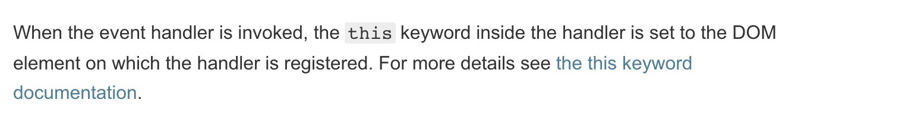
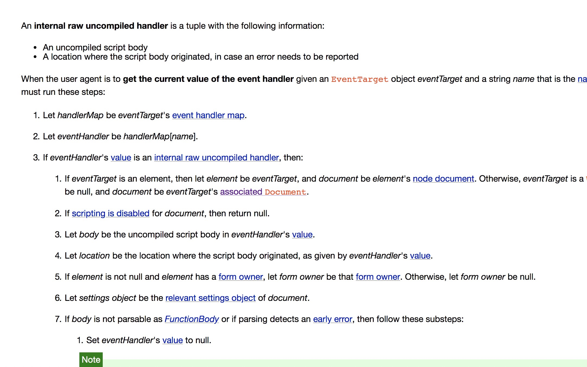
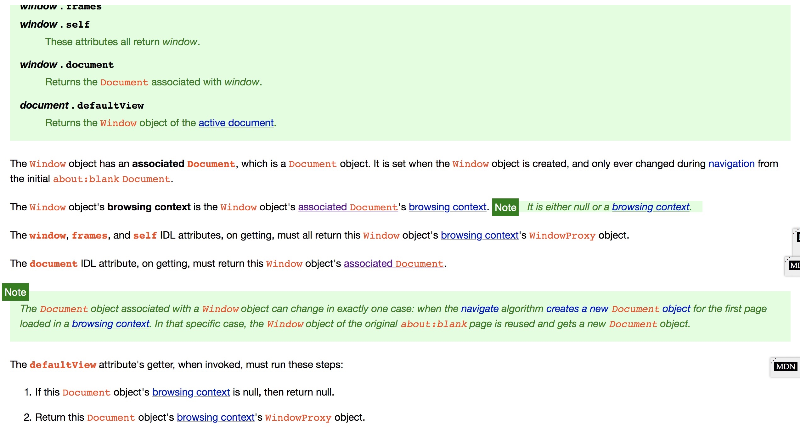

DOM
https://www.jianshu.com/p/0bfb8be7428e
https://coderlt.coding.me/2016/11/22/js-event/
https://zhuanlan.zhihu.com/p/51611590
https://www.html.cn/archives/10207
https://stackoverflow.com/questions/854253/document-getelementbyid-vs-getelementbyid

https://developer.mozilla.org/zh-CN/docs/Web/JavaScript/Reference/Operators/this

https://html.spec.whatwg.org/multipage/webappapis.html#event-handler-attributes
https://html.spec.whatwg.org/multipage/window-object.html#concept-document-window

DOM: Document Object Module, 文档对象模型。我们通过JavaScript操作页面的元素，进行添加、移动、改变或移除的方法和属性, 都是DOM提供的。
如果将文档的内容视为一栋办公楼，那DOM就是一种对办公楼内空间分配的标准，它规定了，这个办公楼的空间，应该是先分楼层，再分房间的方式，方便访客找到这个房间。
有什么用？举例说明：你要去一个叫201的房间（获取对象），你怎么去呢? 用DOM的方法，你只需要走到二层，然后到第一个房间就行了，而你是用走，爬，甚至跳舞的方式过去（即：使用不同的编程语言）都没关系，你只要按照DOM的规定，最终都能找到这个房间。
全世界的房子都是分楼层，再分房间的结构，于是，你去哪个办公楼找人，你都能通过上某个楼层、按照房间的排列顺序去找到某个房间。
同理全世界的网页内容都是DOM的结构，于是，你去找网页中的某个对象时，都能通过某个标签的某个子标签找到某个对象。
BOM
BOM，browser object model，浏览器对象模型，这个对象就是对应着浏览器窗口window。
它提供了一些方法用于访问浏览器的功能，这些功能和网页内容无关。
window 对象
window对象是BOM的核心，表示浏览器正打开的窗口，它是一个全局对象。
它还有一些属性方法和子对象，我们其实已经默默的使用过它了。比如alert()方法，但因为它是widow对象的直接后代，所以不需要加上window前缀。
另外我们定义的全局变量，其实也是定义到了window上的。